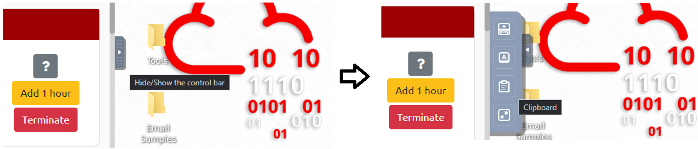

Once a target has been selected and information about them collected, phishing can be performed to obtain credentials. Phishing attacks often follow a familiar strategy to trick victims. In this step, we will examine methods that are commonly used by adversaries in an attack such as:
- Engendering trust from the victim of the source
- Triggering a sense of urgency or fear in the victim to compel action
- Collecting specific information or attempting to trick a victim into performing an activity
Sites with helpful examples include the r/Scams subreddit https://www.reddit.com/r/Scams/, Cofense's database of phishing examples https://cofense.com/real-phishing-examples-and-threats/, Phishing.org's examples https://www.phishing.org/phishing-examples , and Berkeley's Phish Tank https://security.berkeley.edu/resources/phish-tank . Your own Junk mail folder for your pdx.edu account is also likely filled with examples. Find 3 phishing attacks that you feel are the most well-designed for users to click on. Then, analyze each one looking for the 3 methods above.
- Include a screenshot of each attack and a description of how the attack embodies each of the 3 methods.
There are a number of phishing "tells" that you would teach people to look for to identify the attack. Attributes such as an incorrect sender domain, embedded links that don't match the sender's purported identity, the use of a URL shortener, poor formatting, poor spelling, and poor grammar are all examples of this.
- For each example found above, how would you instruct someone in identifying it as a phishing attack? What specific "tells" are there?
The Department of Defense makes their phishing training awareness course available to the public online. It will walk through common types of phishing attacks and social engineering tactics. To go through this virtual training, visit its site here:
- Complete the training then download and take a screenshot of the completion certificate that is issued with your name on it.

Room #1
Join the following room on TryHackMe: https://tryhackme.com/room/phishingemails1tryoe
The room covers some initial strategies and example lures that adversaries have used. Complete the exercise.
- Take a screenshot showing completion of the room
Some notes to make the tasks easier.
- Copying and pasting from the TryHackme machine can be done via the clipboard in the control bar

- To decode
email2.txt, one can edit the file to remove the enclosing headers, then perform abase64 -dcommand to produce the PDF that you can then view. - For
email3.eml, open the message in Outlook on the machine, then use the clipboard to visit CyberChef on-line to perform defanging.
Room #2
Join the second Phishing room on TryHackMe: https://tryhackme.com/room/phishingemails2rytmuv
Complete the exercise.
- Take a screenshot showing completion of the room